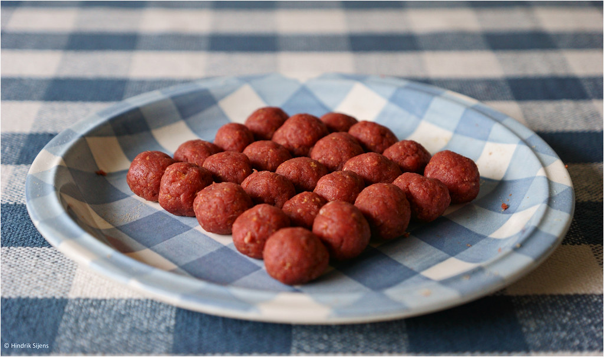

Meatballs

Description
A true classic. These meatballs are quick and easy to make, and they're very tasty.
Ingredients
- 500g Ground meat
- 1/2dl Breadcrumbs
- 1dl Whole Milk
- 1 Small Onion
- 1 Egg
- 1tsp Salt
- 1tsp Black Pepper
- 2tbsp Butter
Steps
- Mix breadcrumbs and milk. Let the mixture swell for 10 minutes.
- Chop the onion into very fine pieces.
- Add the meat, egg, chopped onion, salt, and pepper and stir until everything is mixed and even.
- Form the meat paste into evenly sized balls using your hands or a spoon.
- Fry the meatballs in butter on medium heat for 3-5 miuntes.
- Serve with potatoes and pickles. For a traditional Swedish flair, eat them with lingonberry jam.